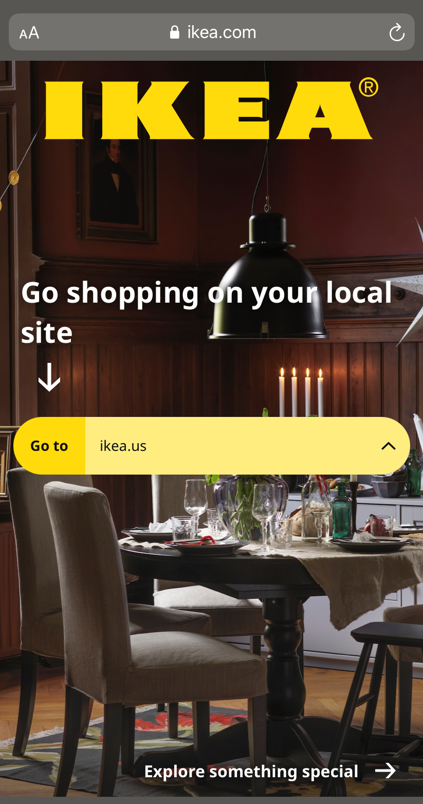
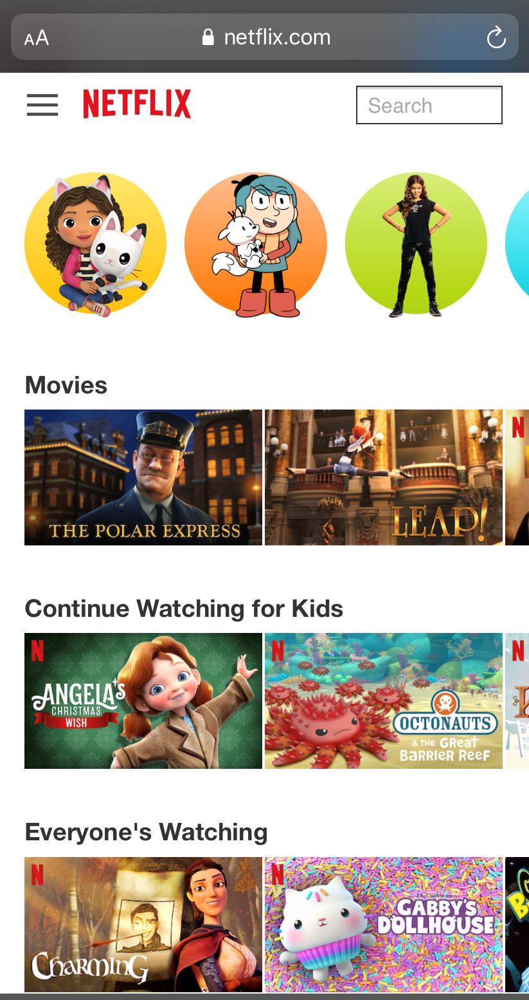

Fitt's Law
Ikea | IKEA.com
To simplify Fitt's Law, the bigger the button on the screen, the easier and more used it becomes. On the home page for Ikea, the selector bar for location is noticeably larger than the "Go to" button. This size difference allows the target area to be the selector.
Hick's Law
Netflix | Netflix.com
The homepage for the kid selection in Netflix is an amazing example of Hick's Law. A user, especially one so young, could be overwhelmed by all the options. Netflix has done an amazing job at providing filters and naturally grouping movies and shows together for easy viewing.
Divine Portions
Goodreads | Goodreads.com
Divine Portions, also known as "The Golden Ratio", is pleasing number of 1.618. The homepage of Goodreads has the image and text broken into the perfect portions. I was able to deduce this by dividing the full length of the screen by 1.618, and having the top image perfectly fit the measurement.